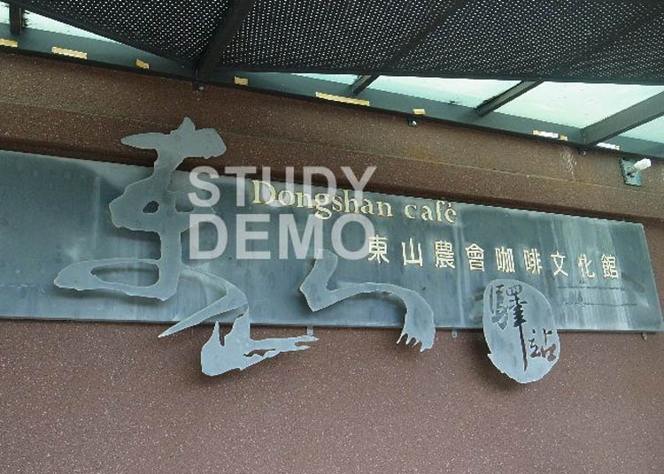
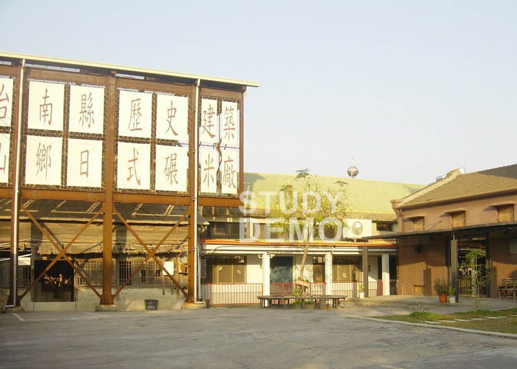
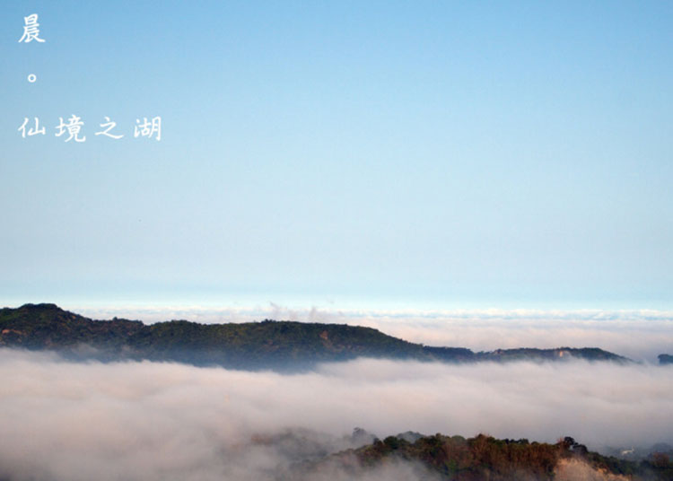
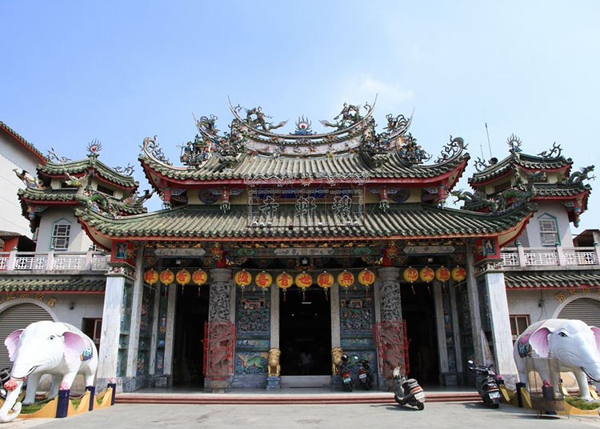
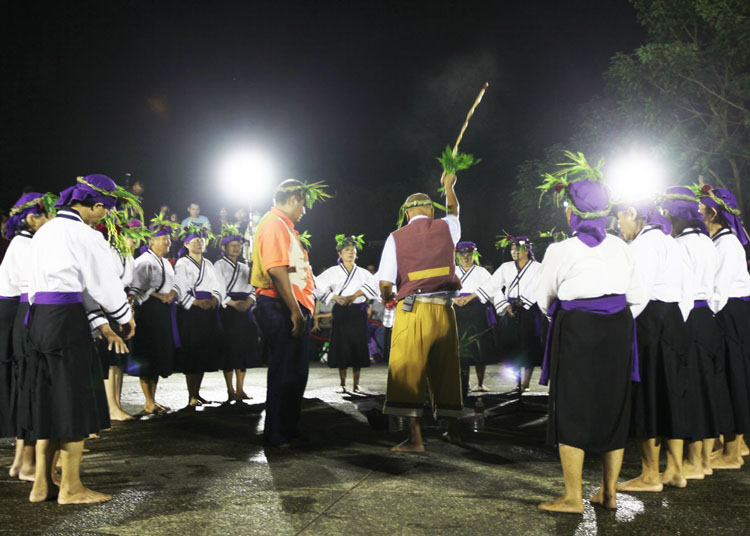
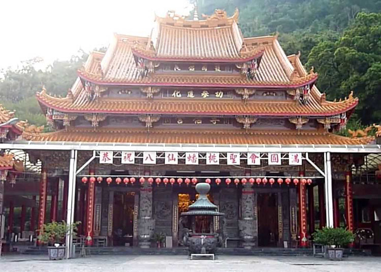

東山咖啡莊園
首頁
環境介紹
咖啡館
東山咖啡莊園
遠眺優美的風景，細細品味一段悠閒愜意的時光

東山驛站
在東山咖啡莊園門外、牆上的招牌寫著「東山驛站」，所謂驛站，是古時候用來傳遞信息或接待賓客的地方。而這裡便是為了接待遠道而來的遊客，東山驛站之存在是為了讓來這兒的遊客，將咖啡文化館當成一個得已暫時放鬆歇息的地方，無論是在東山大街品嚐東山鴨頭、東山肉圓……等各式在地著名美食之後，或是特意找來這兒，只為了品嚐一杯香氣四溢的東山咖啡，東山咖啡文化館都是來到東山遊玩，不可錯過的地方。
日式碾米廠
咖啡莊園的建築物本身是由日據時代留下來的穀倉所改造的，既保存了深具時代意義的古老建築，也活化在地產業，打造在地特色、並且物盡其用東山咖啡文化館位於東山農會旁，咖啡文化館的園區內還保留著原來的日式碾米廠，日式碾米廠建於昭和9年(1934年)，為木造三層樓建築，平面形式方整。碾米場內保存有傳統木造碾米機具，除礱穀機、鼓風機外其餘皆以木材構成，機具與地面相接處皆以磚砌基座墊高，現況保存相當完整，相當難得，是東山咖啡文化館旁很值得一觀的建築。

周邊景點列表
名稱
地址
電話
仙湖農場
臺南市東山區東中村中興路1000號
06-6804455
東山碧軒寺
臺南市東山區東中村中興路1010號
06-6805566
平埔族夜祭-吉貝耍夜祭
臺南市東山區東河里29-1號
06-6806677
孚佑宮仙公廟
臺南市東山區東中村中興路1050號
06-6806677

仙湖農場
本農場座落於嘉南平原，近六甲分割台地西麓，六重溪南畔，位處於台南縣東山鄉南勢村，北鄰白河鎮及關子嶺風景區、南接六甲鄉小瑞士與烏山頭水庫、並與楠西鄉相接，東望崁頭山仙公廟及曾文水庫，西臨新營市，交通非常方便。與農場相連的風景區非常的多，可作為現今週休二日的最佳去處。
東山碧軒寺
東山碧軒寺，廟內供奉觀音佛祖，是東山鄉民的信仰中心，廟宇廣闊，於每年農曆一月十日舉行繞境大典，熱鬧非凡。


平埔族夜祭-吉貝耍夜祭
平埔族曾是台灣大地的主人，「吉貝耍」(Ka-puah-suah 木棉花之意)的夜祭，可以讓我們再度認識大地主人的真實生活。 「吉貝耍」被認為是西拉雅系蕭瓏社現存最大族群，位在東山鄉東河村，迄今每年農曆九月四日夜晚，仍依傳統舉行「阿立母夜祭」，並於初五中午時分舉行「哮海」，儀式神秘罕見，與大內鄉頭社夜祭，同列為台南縣境兩大平埔族夜祭。
孚佑宮仙公廟
位於東山鄉崁頭山麓，供奉主神孚佑帝君(即呂洞賓，仙公祖)據「台灣寺廟誌」記載，約在四百年餘前荷蘭人據台時代，明朝萬曆年間(1573~1619)一位呂坤平所創建。 仙公廟靈山毓秀，得天獨厚，又因求之靈驗，香火鼎盛。所謂「山山包裹水水歸，真穴天成認四圍」誠為不虛。 由本宮可西望嘉南平原，山之頂峰海拔約800公尺，四望遼闊，成為觀光勝地，風景之秀麗，氣勢之雄偉，令人嘆為觀止。從廟後登爬上崁頭山頂，向四週瞭望，本宮獨立山麓，穩如泰山，而方圓數十里內如詩如畫之景，盡收眠底，胸懷頓時為之開暢，其中奧秘，妙不可言。

© PHP網頁班